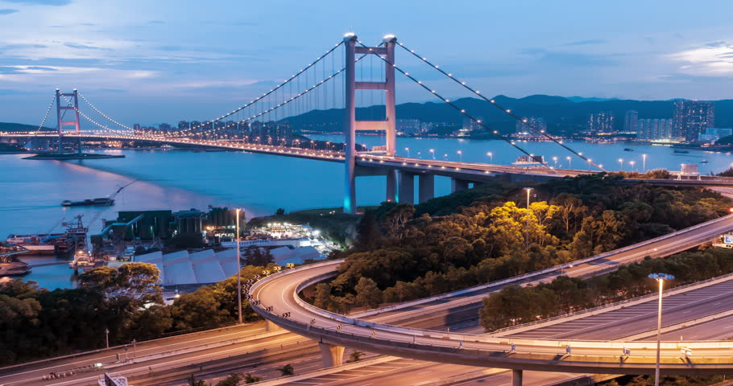

Міст Тсінг Ма
Міст Тсінг Ма, що отримав своє ім'я від назв двох островів, який він з'єднує - Тсінг І і Ма Ван, є шостим за величиною підвісним мостом у світі, і витримує більше залізничних сполучень, ніж будь-який інший подібний міст. Обійшовся Гонконгу міст в 900 млн доларів і був побудований за п'ять років. Зараз це одна з головних визначних пам'яток і особливо разюче міст виглядає в нічний час доби.
